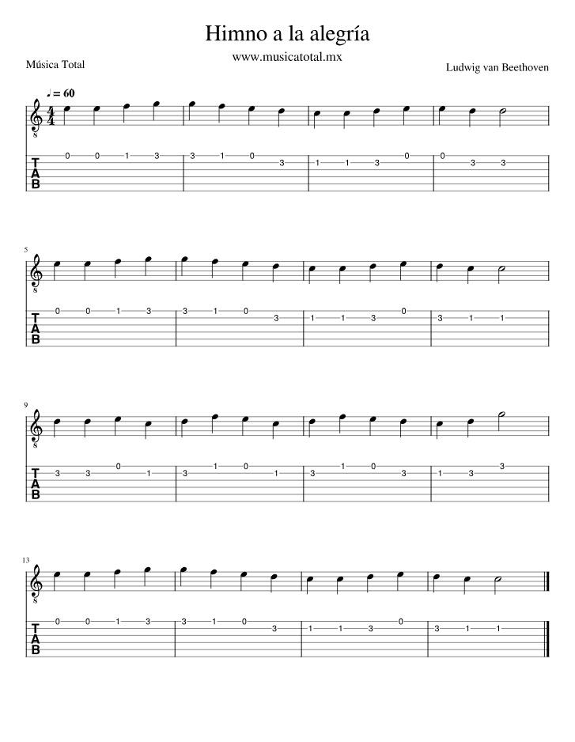

Primera tarea: aprender la escala de C, practicar el Himno de la Alegría y memorizar los acordes C y G.
Aprender las notas en orden y practicar lento.
E|-----------------------------------| A|--3--5-----------------------------| D|--------2--3--5--------------------| G|-----------------2--4--5-----------| B|-----------------------------------| e|-----------------------------------| Notas: C - D - E - F - G - A - B - C
Practica lento primero. Lo importante es tocar limpio y recordar el orden de las notas.
Presiona la imagen para verla en grande.

Practicar cambios lentos entre C y G.
e|--0-- B|--1-- G|--0-- D|--2-- A|--3-- E|--X--
e|--3-- B|--3-- G|--0-- D|--0-- A|--2-- E|--3--